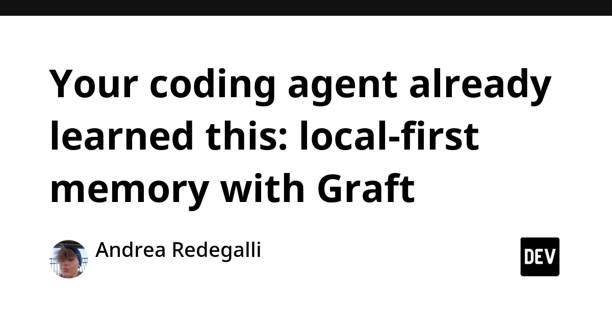
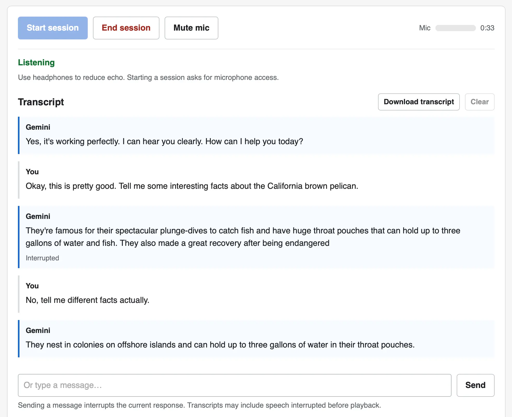
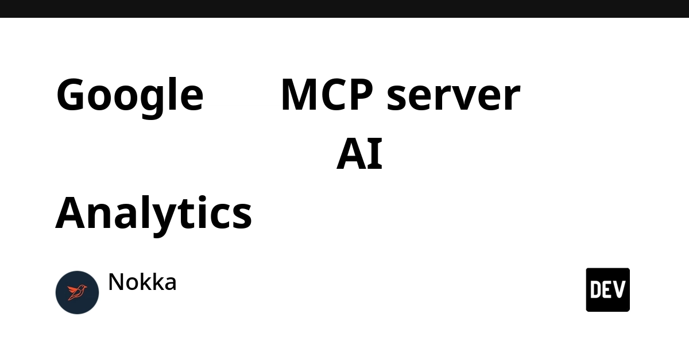
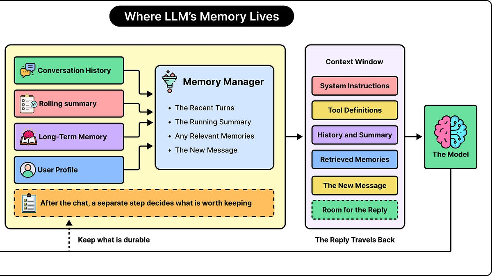
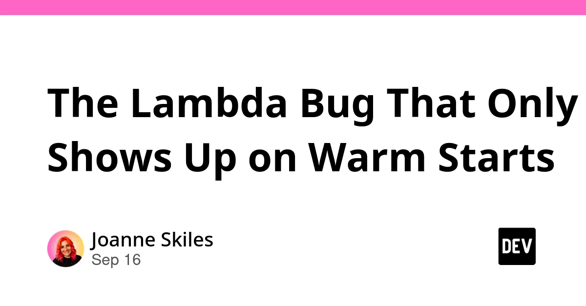
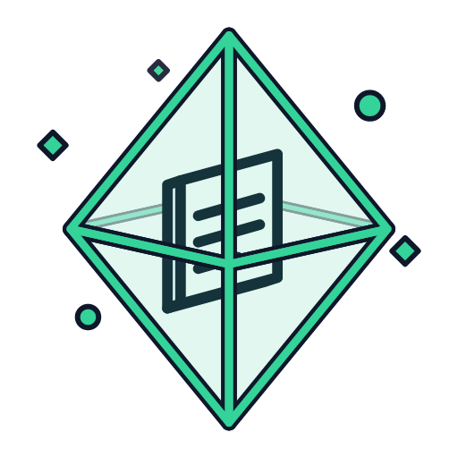

🔥 Top 3 (must read)
Kubernetes v1.37: Pod-Level Resource Managers graduated to Beta
Kubernetes v1.37 moves Pod-Level Resource Managers to Beta, still disabled by default. It builds on Pod-Level Resources (v1.34) so the kubelet can manage CPU and memory for the whole pod instead of per container. Why it matters: if your services run on Kubernetes, this changes how you can set resource limits for multi-container pods. Worth a look before the next cluster upgrade.
K
Your coding agent already learned this: local-first memory with Graft
Graft is an open-source, local-first memory store for coding agents. It keeps fixes, decisions, constraints, and project gotchas available across later agent sessions instead of losing them when a session ends. Why it matters: you use Claude Code daily. A shared memory of "why we did it this way" is the piece most teams are missing when they adopt agents.

Gemini Live audio
Google released Gemini 3.8 Live and 3.8 Live Extended Thinking, two speech-to-speech models shaped like OpenAI's GPT-Live family. Simon Willison built a small browser tool to try them and shares his notes. Why it matters: speech-to-speech APIs are now available from two major vendors. If you build voice features in a mobile app, this is the model family to compare.

🤖 AI for developers
Google built its own MCP server so AI can read your Analytics
article in Thai about the official
googleanalytics/google-analytics-mcp repo. Lets Claude Code or any MCP client query your GA data directly.
Do LLMs Have the Memory of a Goldfish?
ByteByteGo explainer on how LLMs handle memory and context in long tasks. Good primer to share with the team.

Four Iceberg Tools, Three Agent Frameworks: What Ports, and What Doesn't
the same small data agent built in Google ADK, AWS Strands, and Microsoft Agent Framework, with every answer checked against the catalog. Useful for seeing how the frameworks actually differ.
👔 Engineering & teams
The Lambda Bug That Only Shows Up on Warm Starts
AWS reuses the execution environment between invocations. State left in global scope leaks into the next request. Short, practical read for anyone running Node.js on Lambda.

🎯 For me
Kubernetes v1.37 pod-level resource managers (Top 3) — direct hit on the Kubernetes/DevOps interest.
Graft (Top 3) — team-level memory for Claude Code sessions. Fits the "how teams adopt AI" angle.
Lambda warm-start bug — module-level caches and DB clients in Node.js handlers are the classic case.
Nothing today on Flutter, React, Playwright, or Maestro.
💡 App ideas & indie builds
An e-ink frame that hears birds and draws them as 1800s illustrations
(HN, 1356 points) — a frame listens for bird calls, identifies the bird, and shows it as an old-style illustration. Problem: bird ID apps are phone-first and disposable. Inspiration: pair a small on-device model with a calm, ambient display instead of another screen to check.
G
Capsule – Single-file web apps that save their data into SQLite
(HN, 292 points) — a web app that is one file and stores its own data in a SQLite file. Problem: tiny personal tools need a backend and hosting just to persist data. Inspiration: "the app is the file" is a strong model for local-first side projects.

Hacking a $20 4G wireless hotspot into a texting device
(HN, 181 points) — cheap hotspot repurposed into a minimal SMS device. Problem: distraction-free phones cost hundreds of dollars. Inspiration: look for existing cheap hardware that already has the radio you need.
B
Check if your IP has appeared in a residential proxy network
(HN, 59 points) — a "have I been pwned" style lookup for IPs abused as residential proxies. Problem: users have no idea their home network is being resold. Inspiration: a single-purpose lookup site on top of one good dataset can be a whole product.
H
Ordewell – turn one goal into an ordered plan of coding-agent tasks
(HN, 50 points) — takes one goal and breaks it into an ordered list of tasks for coding agents. Problem: agents do well on small tasks but poorly on "build the feature". Inspiration: tooling that sits between the human plan and the agent is still wide open.
G
🎓 Try this
Install Graft next to one repo and let Claude Code write its fixes and decisions into it for a week. Then check whether the next session finds the earlier reasoning without you re-explaining it.